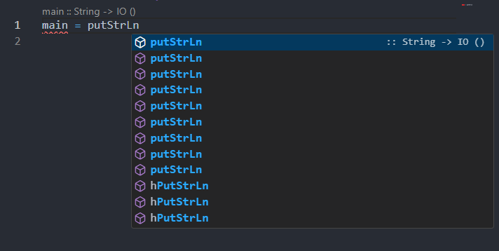

.. toctree::
数据类型与函数
Haskell 安装与入门
介绍

Haskell是一种高级的纯函数式编程语言。它是一个经过二十多年前沿研究的开源产品，可以快速开发健壮、简洁、正确的软件。Haskell强有力地支持与其他语言的集成、内置的并发性和并行性、调试器、分析器、丰富的库和活跃的社区，使它更容易生成灵活、可维护、高质量的软件。
Haskell是一种具有多态、静态类型、惰性的纯函数式语言，与大多数其他编程语言截然不同。该语言以Haskell Brooks Curry命名，他在数学逻辑方面的工作为函数式语言奠定了基础。Haskell基于lambda演算，因此使用lambda作为Haskell的徽标。
Haskell编译器安装与编程环境
当前Haskell语言可以通过GHCup安装程序较快速地安装，如果你在中国地区可以考虑使用镜像源进行安装，这里使用USTC源进行安装。
预先准备
以ubuntu为例，首先应当预先安装curl,git,vim以便后续使用。
sudo apt install -y curl git vim
在~目录下提前创建.ghcup文件夹，并在该目录下创建config.yaml文件，添加如下内容：
cache: null
downloader: Curl
gpg-setting: null
keep-dirs: null
key-bindings: null
meta-cache: null
meta-mode: null
mirrors: null
no-network: null
no-verify: null
platform-override: null
url-source:
OwnSource: https://mirrors.ustc.edu.cn/ghcup/ghcup-metadata/ghcup-0.0.7.yaml
verbose: null
GHCup 安装
在执行GHCup安装程序前，建议直接安装必要的包（当然也可以根据安装程序指示中途安装）。
sudo apt install build-essential libffi-dev libffi8ubuntu1 libgmp-dev libgmp10 libncurses-dev libncurses5 libtinfo5
然后运行GHCup的安装命令：
# Linux, FreeBSD, macOS 用户：在终端中运行如下命令
curl --proto '=https' --tlsv1.2 -sSf https://mirrors.ustc.edu.cn/ghcup/sh/bootstrap-haskell | BOOTSTRAP_HASKELL_YAML=https://mirrors.ustc.edu.cn/ghcup/ghcup-metadata/ghcup-0.0.7.yaml sh
接下来按照提示以及个人需求进行选择（不确定全部默认即可），然后安装程序会提示安装必要的包，这里已经提前安装完成，可直接继续，整个安装过程需要等待较长时间。
安装完成后，更新环境变量：
source ~/.bashrc
使用ghcup tui就可以查看当前HLS,cabal,stack,ghc安装的版本。
提示：
HLS(Haskell Language Server)是Haskell的语言服务器，可以用于代码补全或者报告错误等；
cabal和stack 用于包管理和构建Haskell软件项目；
ghc(Glasgow Haskell Compiler)是Haskell主要编译器。
编程环境
支持Haskell语言的编辑器有很多，这里推荐使用VSCode作为编辑器。为了使VSCode能够支持Haskell语言，我们需要下载haskell.haskell插件，安装完成后编辑器会自动搜索GHCup并完成配置。

提示：如果无法自动配置，需要手动为插件提供ghcup的位置，默认路径
~/.ghcup/bin/ghcup
下面使用Vscode编写一个HelloWorld程序：
-- hello.hs
main :: IO ()
main = putStrLn "Hello Haskell"
将程序保存在hello.hs中，并使用runghc hello.hs命令执行程序，可以看到程序输出了Hello Haskell。
认识GHCi
GHCi是Haskell的交互式解释器，它允许使用者导入Haskell源代码或库，并以交互的形式进行查看函数，调用函数等操作。
在终端输入ghci即可进入解释器,效果如下：
GHCi, version x.x.x: http://www.haskell.org/ghc/ :? for help
Prelude>
首行解释器显示了GHCi的版本，Prelude>提示符代表GHCi默认的初始环境，它是一个定义了一系列类型和函数的库，用户可以直接在解释器中使用其中定义的内容。
9.x版本的GHCi解释器提示符为
ghci，实际上这并没有本质区别（都默认只导入了Prelude），读者可以通过:set prompt "something>"将提示符替换为任何想要的提示符
值得注意的是，在9.x版本开始，GHCi不再显式导入模块,例如在以前的版本导入
Control.Monad后提示符会变为Prelude Control.Monad>，而9.x版本则不会
GHCi 常用命令
:load/:l: 导入当前路径或者路径下的文件:reload/:r: 当修改了已经导入的文件，可以使用此命令重新导入:cd: 改变当前路径:module/:m: 导入一个库:module +<module1> <module2> ...，或者移除一个库:module -<module1> <module2> ...:!: 执行终端命令:quit/:q: 退出GHCi:?: 输出帮助信息:type/:t: 查看函数或值的类型:info/:i: 查看定义的详细信息:set: 设置
更多命令和细节在后续章节中会体现。
使用GHCi
下面举一些简单的示例以便读者尝试并熟悉，后续部分讲解将基于GHCi进行。
Prelude> 1 + 1
2
Prelude> True && False
False
Prelude> putStrLn "Hello GHCi"
Hello GHCi
Prelude>:{
| add :: Int -> Int -> Int
| add a b = a + b
:}
Prelude> add 1 2
3
关于注释
Haskell中使用--开头作为单行注释，使用{-与-}包裹多行注释。
-- 单行注释
{-
多行注释1
多行注释2
-}
多行注释有一种特殊的情形，当需要声明语言扩展与编译器选项或参数时，需要在文件首处给出声明，并使用{-#和#-}包裹。读者此处只需了解即可。